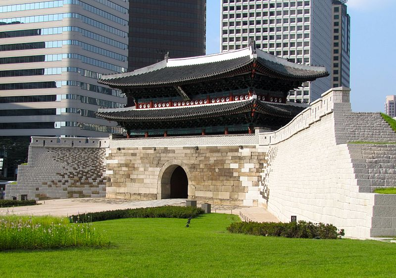

Architecture
Because of South Korea's tumultuous history, construction and destruction has been repeated endlessly, resulting in an interesting melange of architectural styles and designs. Korean traditional architecture is characterized by its harmony with nature. Ancient architects adopted the bracket system characterized by thatched roofs and heated floors called ondol. People of the upper classes built bigger houses with elegantly curved tiled roofs with lifting eaves. Traditional architecture can be seen in the palaces and temples, preserved old houses called hanok,and special sites like Hahoe Folk Village, Yangdong Village of Gyeongju and Korean Folk Village. Traditional architecture may also be seen at the nine UNESCO World Heritage Sites in South Korea. Western architecture was first introduced to Korea at the end of the 19th century. Churches, offices for foreign legislation, schools and university buildings were built in new styles. With the annexation of Korea by Japan in 1910 the colonial regime intervened in Korea's architectural heritage, and Japanese-style modern architecture was imposed.  Sungnyemun gate in Seoul
Cuisine
Korean cuisine is largely based on rice, noodles, tofu, vegetables, fish and meats. Traditional Korean meals are noted for the number of side dishes, banchan (반찬), which accompany steam-cooked short-grain rice. Every meal is accompanied by numerous banchan. Kimchi (김치), a fermented, usually spicy vegetable dish is commonly served at every meal and is one of the best known Korean dishes. Korean cuisine usually involves heavy seasoning with sesame oil, doenjang (된장), a type of fermented soybean paste, soy sauce, salt, garlic, ginger, and gochujang (고추장), a hot pepper paste. Other well-known dishes are Bulgogi (불고기), grilled marinated beef, Gimbap (김밥), and Tteokbokki (떡볶이), a spicy snack consisting of rice cake seasoned with gochujang or a spicy chili paste. Soups are also a common part of a Korean meal and are served as part of the main course rather than at the beginning or the end of the meal. Popular Korean alcoholic beverages include Soju, Makgeolli and Bokbunja ju. Korea is unique among Asian countries in its use of metal chopsticks. Metal chopsticks have been discovered in Goguryeo archaeological sites.
Korean dish BibimbapEntertainment
In addition to domestic consumption, South Korea has a thriving entertainment industry where various facets of South Korean entertainment including television dramas, films, and popular music has generated significant financial revenues for the nation's economy. The cultural phenomenon known as Hallyu or the "Korean Wave", has swept many countries across Asia making South Korea a major soft power as an exporter of popular culture and entertainment, rivaling Western nations such as the United States and the United Kingdom. The emergence of the group Seo Taiji and Boys in 1992 marked a turning point for Korean popular music, by incorporating elements of American popular musical genres of the 1990s. Popular artists who diverge from the K-pop sound include solo singer BoA, rapper PSY, boy bands Shinhwa, TVXQ, Super Junior, BIGBANG, BTS, and girl groups Girls' Generation, 2NE1, Brown Eyed Girls, 4minute, After School, Blackpink and many other artists. South Korea is also home to its own form of hip hop artists, including Epik High, Block B, Jay Park and GDragon.
Korean group 2NE1